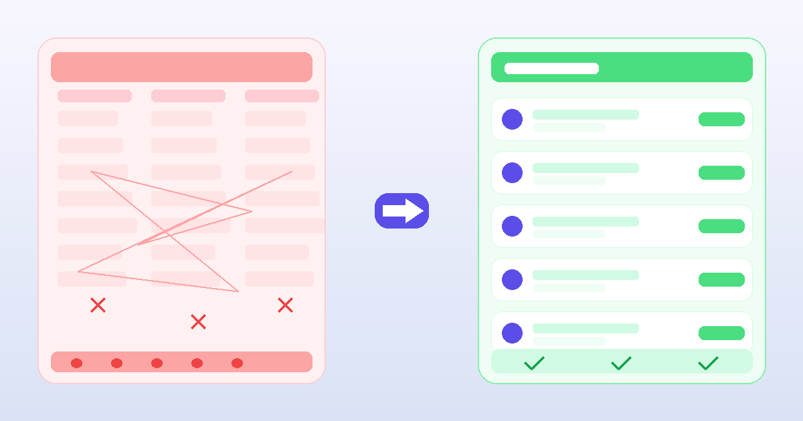

Why ADHD Makes Budgeting Hard (And What Actually Helps)
Published: June 30, 2026 · 9 min read
Executive dysfunction, time blindness, and dopamine-driven spending aren't character flaws. They're predictable outcomes of how a specific kind of brain processes decisions, time, and reward. Here's what the research actually says, and what systems hold up once you understand it.

TL;DR — three things making money hard, three things that actually help
Why it's hard:
- Executive dysfunction makes planning feel impossible
- Time blindness collapses future consequences
- Dopamine system drives impulsive spending
What actually helps:
- Reduce decisions, not increase discipline
- Make future consequences visible right now
- Add structured friction before impulse purchases
First: this isn't about willpower
The most common thing people with ADHD hear about money is some variation of “just be more disciplined” or “stick to the budget.” This advice fails not because the person isn't trying, but because it misunderstands the mechanism. ADHD is characterized by differences in executive function, the cognitive systems that control planning, working memory, inhibition, and the ability to connect present actions to future outcomes. When these systems work differently, budgeting doesn't just become harder, it becomes a task that is structurally mismatched to the brain being asked to do it.
A 2005 meta-analysis of 83 independent studies found that executive function differences are present across all ADHD subtypes and are not explained by other factors like IQ or anxiety. This isn't a mild tendency. It is a core feature of how the ADHD brain is organized.
Executive dysfunction: what it actually means for money
The term sounds clinical, but its everyday effects on money are very concrete. Executive function is what lets someone look at a bank balance and mentally project what it will look like in two weeks after rent and groceries. It's what lets someone start a budget template on Sunday and still be updating it on Thursday. It's what makes it possible to feel the pull of an impulse buy and decide to wait anyway.
When executive function is impaired, these tasks don't just require effort, they require a kind of mental override that the brain doesn't reliably produce on demand. The person isn't forgetting to budget because they don't care. They're facing a genuine bottleneck in the cognitive pipeline that standard financial tools are designed around.
The fix isn't to push harder against the bottleneck. It's to build systems that route around it.
Time blindness: why “future you” doesn't feel real
Russell Barkley describes a feature of ADHD he calls “temporal myopia,” a difficulty perceiving time beyond the immediate present. Where most people can hold a mental sense of “two weeks from now” or “by the end of the month,” many people with ADHD experience time as two states: now, and not now. Everything in “not now” carries roughly the same subjective weight, whether it's happening tomorrow or in six months.
For money, this has a direct and measurable consequence. A purchase that feels small right now is being weighed against a bill that's abstract, distant, and therefore much lighter in the mental accounting. The person isn't being reckless. They're working with an accurate representation of how the costs feel to them at the moment of decision, and the future cost genuinely feels less real.
Finiverse shows your balance in real-time with upcoming bills.
Making “future you” visible before the purchase, not after.
This is why standard advice like “think about your savings goal before you spend” doesn't hold up. The goal is in “not now.” The purchase is in “now.” They aren't competing on equal terms.
Dopamine-driven spending: the reward loop
ADHD is associated with differences in how the brain's reward system responds, particularly around dopamine signaling. When the reward of buying something is immediate and concrete, and the cost is deferred and abstract, the system tilts toward the purchase in a way that's stronger than it would be for a neurotypical brain. This isn't about greed or poor values. It's about a reward circuit that places higher weight on immediate outcomes.
Research on delay discounting in ADHD, how steeply a future reward is mentally discounted the further away it is, shows this isn't just a mindset issue. People with ADHD show steeper delay discounting curves on average, which shows up as a measurable behavioral difference in financial decision-making, not just a feeling.
This also explains why many people with ADHD report that “retail therapy” genuinely works in the moment. It does. A purchase triggers a real dopamine response. The problem is not that the brain is wrong about the short-term reward. It's that the short-term reward consistently wins against the long-term cost.
“You need more discipline.” A system built for sustained attention, consistent logging, and deferred rewards, the three things the ADHD brain finds hardest.
Remove decisions from the moment of spending. Automate anything that can be automated. Make consequences visible before, not after, the transaction.
What actually helps: strategies backed by how the brain works
1. Automate everything that doesn't need a decision
Rent, utilities, savings transfers: anything that is predictable and recurring should require zero attention after the initial setup. Every financial decision that runs automatically is a decision that never hits the executive function bottleneck. The goal isn't to become more organized. It's to make the important things happen without needing to be organized about them.
2. Reduce friction to log, not increase motivation
The reason financial tracking apps get abandoned after a week isn't lack of interest. It's that most of them are designed for someone who is already on top of their finances and wants to get more granular. Logging a transaction that requires category selection, sub-category, notes, and a tag adds four micro-decisions to every purchase. For ADHD, that's four opportunities for the system to break down. A log that takes two taps beats a log that's perfectly structured but only used for ten days.
3. Add a structured pause before impulse purchases
The “sleep on it” rule works in theory but fails in practice for time-blind brains because “tomorrow” isn't a motivating deadline. A more effective approach is the wishlist with a timer: add the item to a list, set a wait period (24 hours, 72 hours, or a week depending on price), and only allow yourself to buy it after the timer runs out. This doesn't rely on willpower. It externalizes the delay into a visible, concrete mechanism. Many people find that half of wishlist items feel much less important once the initial dopamine spike passes.
4. Track mood alongside money
One of the most useful things anyone with ADHD can do with their financial data is add emotional context. Emotion drives a significant portion of spending decisions, not because people are irrational, but because emotional state directly affects the reward calculation happening in the moment. Knowing that you tend to spend impulsively when you're overstimulated, or avoid checking your balance when you're anxious, gives you actionable information. It lets you build a buffer into your system for the times when your brain is most likely to work against you.
Built for exactly this
Finiverse tracks how you feel, not just what you spend.
The wishlist timer, emotion check-ins, calm dashboard, and Sam AI are all designed for the brain you actually have, not the one budgeting apps assume you have.
Download free on the App Store →The goal isn't perfection. It's a system that holds.
Financial stability for ADHD brains doesn't look like the neat spreadsheet in every personal finance blog. It looks like enough automation that the important things happen without requiring perfect attention. It looks like a low-friction way to notice patterns over time. It looks like a pause mechanism that interrupts the worst impulse buys. And it looks like a tool that meets you where you are, rather than one that assumes you have unlimited working memory, iron will, and an intrinsic love of category labels.
The brain you have is not the problem. The tools designed for a different brain are the problem.
Sources
- Willcutt, E. G., Doyle, A. E., Nigg, J. T., Faraone, S. V., & Pennington, B. F. (2005). Validity of the executive function theory of attention-deficit/hyperactivity disorder: a meta-analytic review. Biological Psychiatry, 57(11), 1336–1346.
- Barkley, R. A. (1997). Behavioral inhibition, sustained attention, and executive functions: constructing a unifying theory of ADHD. Psychological Bulletin, 121(1), 65–94.
- Barkley, R. A. (2012). Executive Functions: What They Are, How They Work, and Why They Evolve. Guilford Press.
- Beauchaine, T. P., Ben-David, I., & Bos, M. (2020). ADHD, delay discounting, and risky financial behaviors. PLOS ONE.
- Hallowell, E. M., & Ratey, J. J. (2011). Driven to Distraction (Revised). Pantheon Books.
A finance app that understands your brain.
Finiverse was built for the people every other app loses to overwhelm. Calm UI, emotion check-ins, wishlist timer, and Sam AI, all free to start.
Download Finiverse free →